Transport, kran & løft
Kranbiler, mobilkran, trækkere og maskinudlejning
Læs mere – Transport, kran & løft →Kranløft og maskinudlejning til fornuftige dagspriser, losning af trawlere i Nuuk og Aasiaat, lager, renovation og restaurant Igaffik. Vi kombinerer soliditet og lang erfaring med innovative og miljørigtige løsninger.
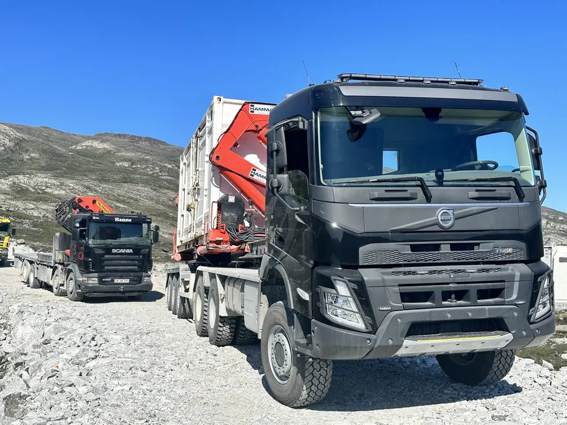
Erhvervskunder, kommuner, rederier, mine- og byggeprojekter får løst opgaven ét sted, med lokalt kendskab og en af Grønlands største vognparke.
Kranbiler, mobilkran, trækkere og maskinudlejning
Læs mere – Transport, kran & løft →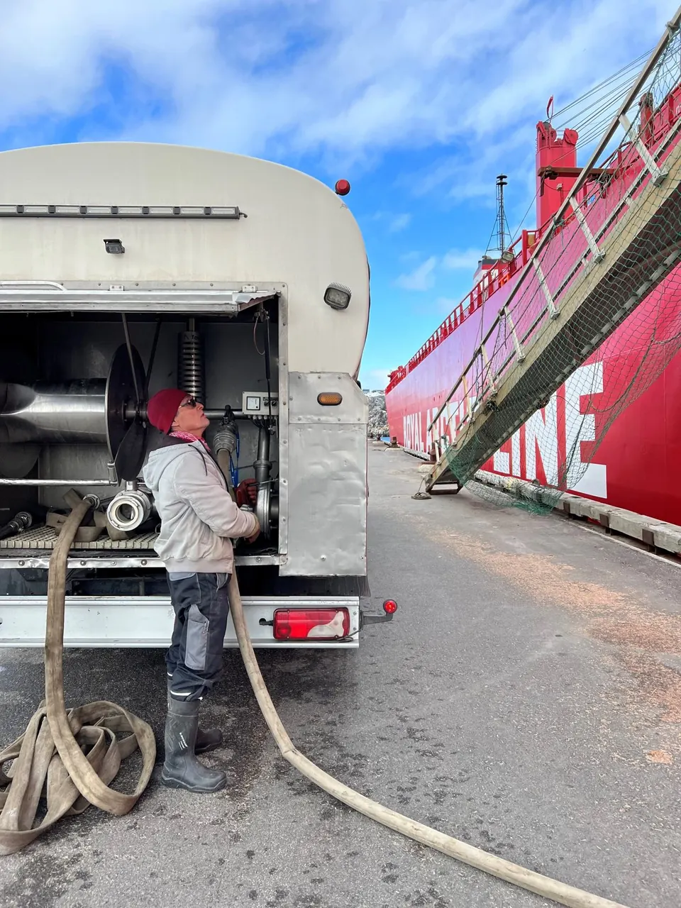
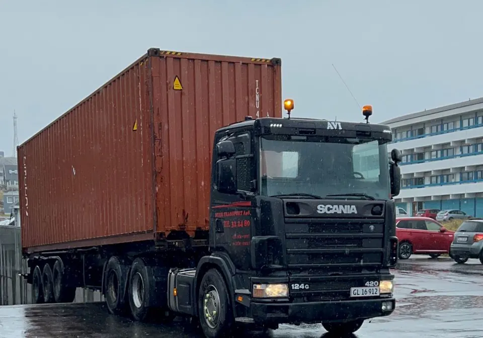

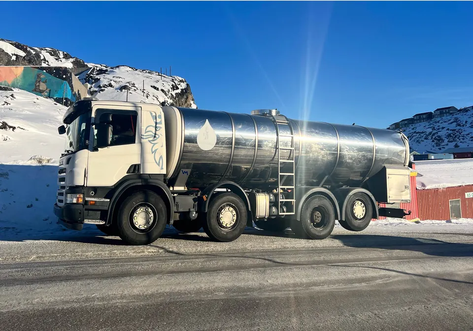
Mine og byggeri, vicevært, vandvogn og mandskab
Læs mere – Service & entreprenør →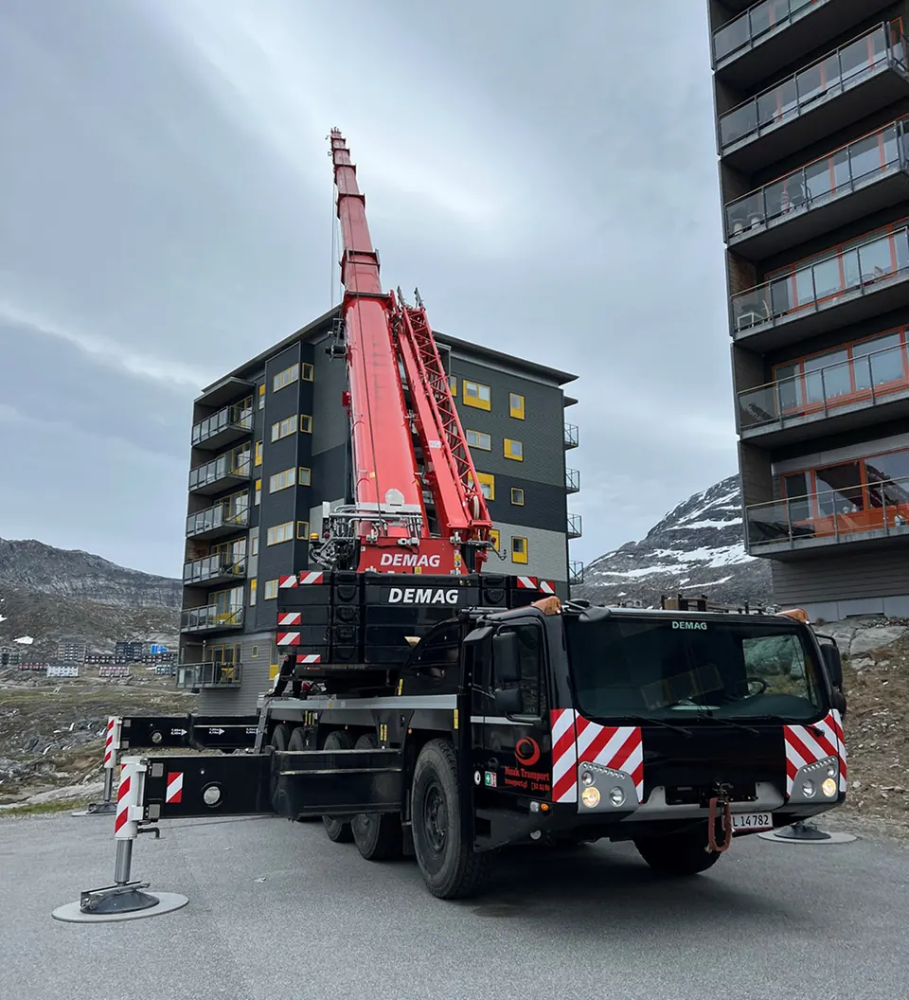
Mobilkran · AC 220-5
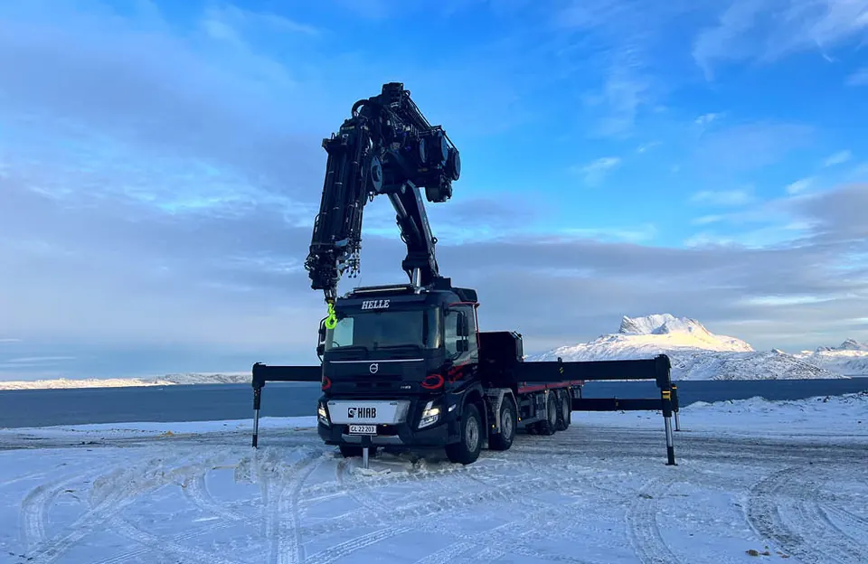
Kranbil · HIAB iQ-1188
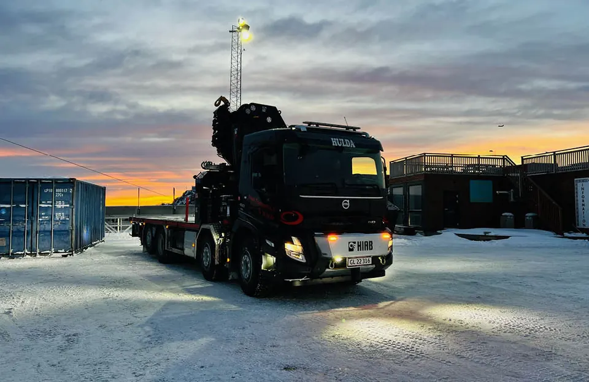
Kranbil · HIAB X-HIPRO 638
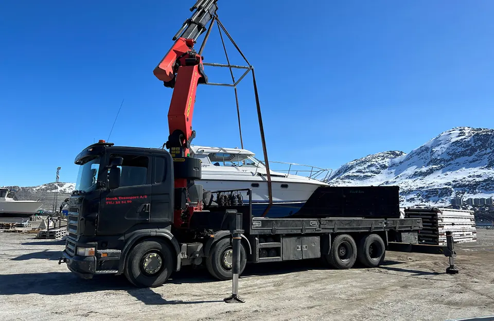
Kranbil · Palfinger
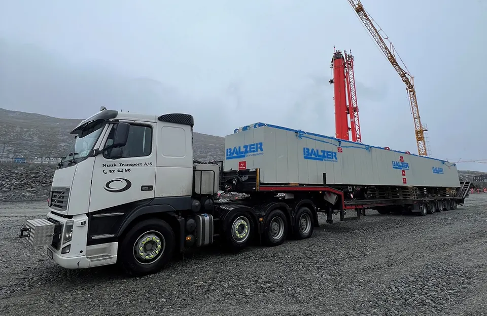
Trækker
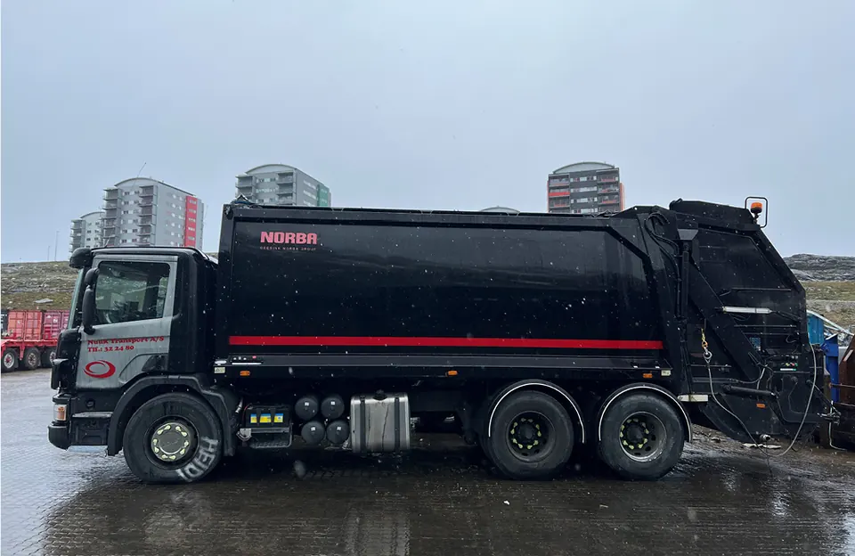
Renovationsbil
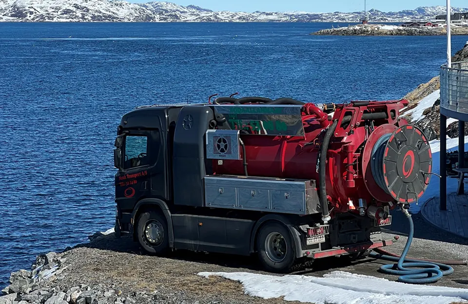
Slamsuger (ADR)
Vandvogn (Nukissiorfiit)
Vi losser både mindre fiskeskibe og store havgående trawlere. Vores erfaring og lokale servicenet har gjort Nuuk til den foretrukne omskibningshavn i Davisstrædet.
Vi indsamler den største del af dagrenovationen i Nuuk. Da vi kom ind som operatør, blev kommunens samlede udgifter til renovation halveret.
Dagrenovation & containereMini- og midicontainere til hjem og erhverv og åbne containere til byggeaffald.
Slamsugning & spildolieGrønlands største og mest moderne ADR-godkendte bil til flydende affald.
StorskraldFor Kommuneqarfik Sermersooq to gange om året og efter aftale ind imellem.
Mineselskaber, entreprenører og rederier bruger os, når opgaven skal løses sikkert og til tiden.
Nuuk Transport er virkelig professionelle og meget fleksible. Alt kan lade sig gøre, og de springer til med kort varsel.
Uanset hvilket projekt man sidder med, kan man stole på, at Nuuk Transport hjælper en i mål med logistikken.
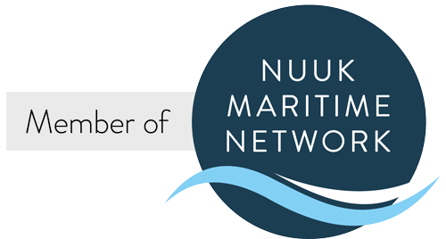
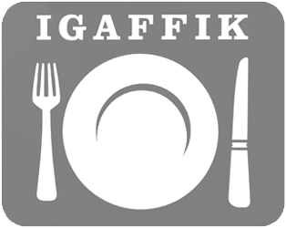
Morgenmad, varme og kolde frokostretter, varm aftensmad og grillmad hver dag. Åbent alle dage fra morgen til aften.
Fortæl os kort, hvad du har brug for. Så får du et tilbud fra den rette afdeling.